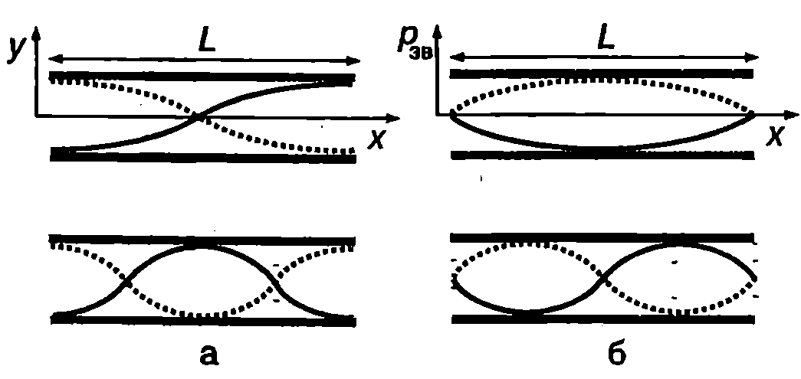
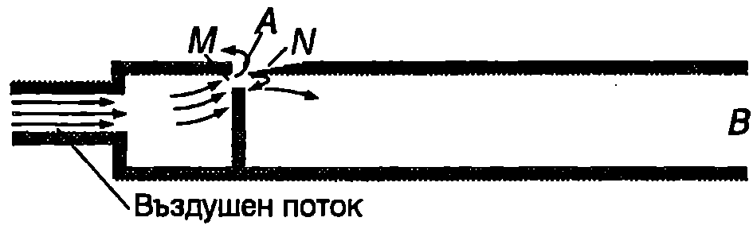
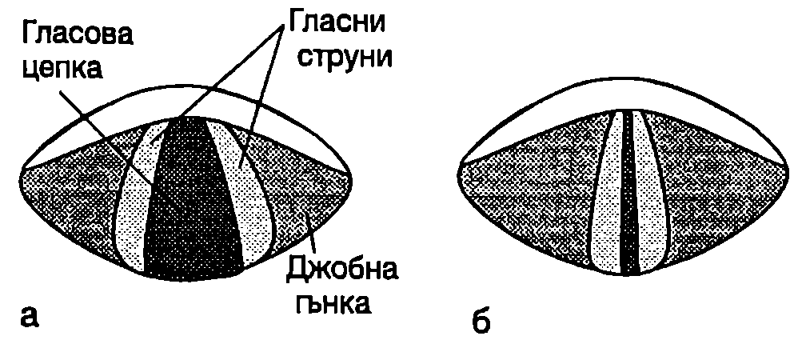
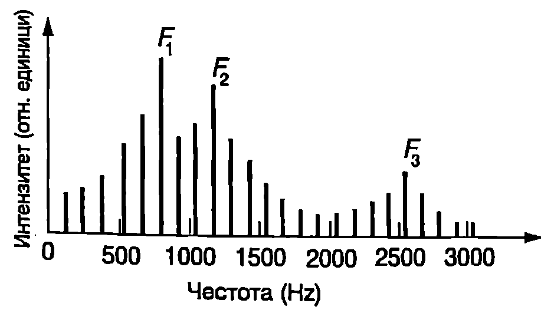
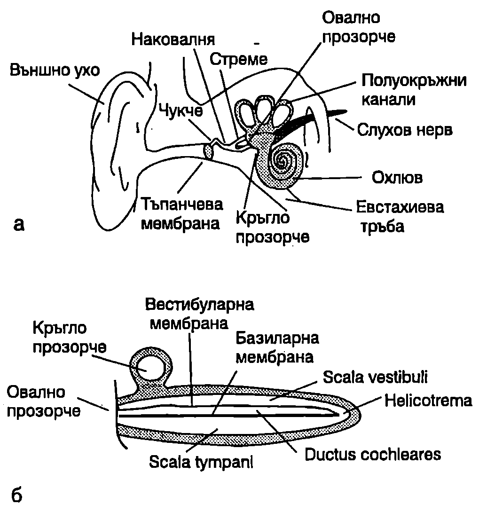

Стоящи звукови вълни
Когато въздушна среда се намира при определени гранични условия, например запълва съд с даден обем и форма на стените, в нея могат да се възбудят стоящи вълни. Обемът въздух се характеризира с набор от собствени честоти на трептене, които зависят от формата и размерите на съда. В общия случай собствените честоти не образуват хармоничен ред и определянето им е сложна задача. Най-прост за анализ и с голямо практическо значение е случаят, когато въздухът запълва дълга цилиндрична тръба. Ако диаметърът на тръбата е малък в сравнение с дължината на вълната, може с приближение да се приеме, че в направление на оста на тръбата се разпространяват едномерни хармонични вълни, подобни на тези по опъната струна. Тогава трябва само да определим граничните условия за въздушния стълб и да повторим направените в~\ref{sec:77} изводи за собствените честоти на трептене на струна.

Стоящи звукови вълни в цилиндрична тръба с два отворени края: а) вълна на отклонението; б) вълна на звуковото налягане.
`Фиг. 79.1`
Ако двата края на тръбата са затворени, прилепващият към дъната на цилиндъра въздух не се движи и в краищата на тръбата се получават възли на стоящата вълна на отклонението. Случаят е аналогичен на опъната струна с два неподвижно закрепени края (Фиг. \ref{fig:77.2} на стр.144). Собствените честоти на трептене на въздушния стълб се изразяват с уравнение \eqref{eq:77.8} на стр. 145, където $u$ е скоростта на звука във въздуха, а $L$ — дължината на тръбата. Когато единият край на тръбата е отворен, стоящата вълна на отклонението има връх около отворения край и възел при затворения край на тръбата. Спектърът на собствените трептения на въздушния стълб е същият, както за струна с един закрепен и един свободен край (Фиг. \ref{fig:77.5} на стр.146), а собствените честоти се изразяват с уравнение \eqref{eq:77.11} на стр.147.
Стоящата вълна на отклонението има върхове близо до двата края на тръбата, когато те са отворени. По дължината на въздушния стълб се нанасят цяло число полувълни (Фиг. \ref{fig:79.1}а) и собствените честоти на трептене се изразяват с уравнение \eqref{eq:77.8}, както за тръба с два затворени края.
Ще припомним, че звуковото налягане е отместено по фаза от отклонението с $\pi/2$, т.е. в точките, където отклонението на частиците от равновесното им положение е нула, звуковото налягане е максимално и обратно. Следователно възлите на стоящата вълна на налягането съвпадат с върховете на стоящата вълна на отклонението, а върховете на стоящата вълна на налягането са на местата, където стоящата вълна на отклонението има възли. На Фиг. \ref{fig:79.1} схематично са показани стоящите вълни на отклонението (а) и на налягането (б), съответстващи на основната и на втората хармонична честота за въздушния стълб в тръба с два отворени края.
По-прецизният анализ показва, че върховете на стоящата вълна на отклонението са разположени малко извън отворените краища на тръбата, на разстояние от порядъка на радиуса на тръбата.
Музикални инструменти
Явлението резонанс, на което се спряхме при изучаването на принудените трептения по опъната струна, се използва за формиране и усилване на звука от различни източници духови и струнни музикални инструменти и др.
Като пример за духов инструмент ще разгледаме тръба на орган. Въздушният поток преминава през специален отвор $M$ (Фиг. \ref{fig:79.2}), при което от острието $N$, разположено срещу отвора $M$, се откъсват вихри и се възбуждат трептения на въздушния стълб в тръбата с много широк
спектър от честоти. До значителни амплитуди обаче достигат само трептенията, чиито честоти съвпадат със собствените честоти на въздушния стълб. Поради резонанса тези трептения се усилват и се предават на въздуха извън тръбата. Така въздушният стълб в тръбата на органа става източник на звукови вълни, чиито честоти се определят от дължината на тръбата и от граничните условия. Около отвора $A$, който свързва тръбата с атмосферния въздух, се получава връх на стоящата вълна на отклонението. В зависимост от това, дали другият край $B$ е отворен или е затворен, собствените честоти се задават съответно с уравнение \eqref{eq:77.8} или \eqref{eq:77.11}.

Тръба на орган.
`Фиг. 79.2`
В струнните музикални инструменти източници на звук са трептящите струни. Струните обаче са много тънки и не са в състояние да свиват и разширяват големи обеми от въздух. Затова, ако не се извършва допълнително усилване, издадените от тях звукове са с много малък интензитет. В струнните инструменти се извършва резонансно усилване на звука от тялото на музикалния инструмент и от обема въздух в него. Трептенията на струните предизвикват принудени трептения на тялото и на въздуха в него. За да се постигне усилване на звука, трябва собствените честоти на трептене на тялото и на обема въздух в него да са близки до собствените честоти на струните. Тогава настъпва резонанс и се извършва ефективно предаване на енергия от струните чрез трептящото тяло на инструмента на външния въздух в околното пространство се излъчват звукови вълни със значителен интензитет.
Пример 79.1
Основните честоти на орган с тръби, които са отворени от двата края, лежат в интервала от 65 Hz до 2090 Hz при температура 27 °C. а) Определете дължината на най-дългата и на най-късата тръба на органа. Скоростта на звука във въздуха при температура 27 °C е 347 m/s. 6) Как ще се изменят основни те честоти на органа, ако температурата в залата се понижи до 7 °C? \end{psexample}
Решение
а) Основната честота на трептене на въздушен стълб в тръба с два отворени края е $\displaystyle \nu_1 = \frac{u}{2L}$. Най-дългата тръба има най-ниска основна честота: $$L_{\max} = \frac{u}{2\nu_{\min}} \frac{347~\mathrm{m/s}}{2(65~\mathrm{Hz})} = 2,!7~\mathrm{m}.$$
Най-късата тръба на органа има най-висока основна честота:
$$L_{\min}= \frac{u}{2\nu_{\max}} = \frac{347~\mathrm{m/s}}{2(2090~\mathrm{Hz})} = 8,!3~\mathrm{cm}.$$
б) Скоростта на звука намалява при понижаване на температурата: $u\propto\sqrt{T}$ (вж. пример 78.1). Тъй като собствените честоти са правопропорционални на скоростта на звука, при понижаване на температурата те също ще намаляват и в студената зала органът ще звучи по-глухо. Собствените честоти при температури $T = 300$ К и $T’ = 280$ K са свързани със съотношението $$\frac{\nu_1’}{\nu_1} = \frac{u’}{u} = \sqrt{\frac{T’}{T}}; \nu_1’ = \nu_1 \sqrt{\frac{T’}{T}} = 0,!97\nu_1.$$
Човешки глас
Съществува аналогия между начина, по който се формират звуковете на музикалните инструменти, и механизма на човешката реч. Гласните струни извършват трептения, а гърлото, носната кухина и устната кухина са резонатори, които усилват и модифицират звука. Огромното многообразие от звукове, които може да издава човек, се дължи на два основни фактора:
-
При изменение на опъването на гласните струни техните собствени честоти на трептене се изменят в широки граници. Подобно на струните на музикалните инструменти, собствените честоти на гласните струни нарастват, когато те са по-силно опънати.
-
Резонаторите, особено устната кухина, могат да се изменят по обем и форма, при което се променят честотите, които те усилват.

`Фиг. 79.3`
В процеса на дишането гласните струни (гласови гънки) са отпуснати и гласовата цепка е умерено отворена (Фиг. \ref{fig:79.3}а). При подготовка за говорене гласовите мускули опъват гласните струни и те затварят гласовата цепка (Фиг. \ref{fig:79.3}б). Налягането на въздуха под тях нараства, докато предизвика отваряне на гласовата цепка. Съгласно с уравнението на Бернули, кога то скоростта на въздушния поток през гласовата цепка нараства, налягането намалява и гласните струни отново се затварят. След това налягането отново нараства и предизвиква следващо раздалечаване на гласните струни и т.н.
В~\ref{sec:77} разгледахме възбуждане на собствени трептения на опъната струна, например чрез изтегляне средата на струната (Фиг. \ref{fig:77.4} на стр.146). По подобен начин чрез разтягането на гласните струни при отваряне и затваряне на гласовата цепка се възбуждат собствени трептения на гласните струни с различни честоти, но с близки амплитуди. Резонансните кухини на устата и носа при подходящо положение на езика, зъбите и устните усилват определени честоти и формират спектъра на различните звукове.

`Фиг. 79.4`
Честотният анализ на гласните звукове на различните азбуки показва, че в спектрите им обикновено присъстват три резонансни пика. На Фиг. \ref{fig:79.4} е показан относителният интензитет за различните честоти, формиращи звука а'' в английската дума father”. Честотите $F_1$, $F_2$ и $F_3$ на главните резонанси се наричат форманти.
Спектрите на съгласните звукове и на сричките са по-сложни, защото те включват и непрекъснатите спектри на шумовете, произведени например при преминаване на въздуха между езика и зъбите.
Пример 79.2
Носната кухина и устната кухина на човека образуват сложна резонансна структура, но нейните свойства могат с приближение да се опишат от много прост модел. В него резонаторът се приема за цилиндрична тръба, единият край на която (при носа и устата) е отворен, а другият (при гласните струни) е затворен. Определете първите три резонансни честоти за такава тръба с дължина $L = 17$ cm и ги сравнете с формантите от Фиг. \ref{fig:79.4}. Скоростта на звука е $u = 344$ m/s. \end{psexample}
Решение
Собствените (резонансни) честоти на тръба с един отворен край са $$\nu_n = \frac{(2n - 1) u}{4L}.$$ За $n = 1, 2$ и 3 получаваме: $$\nu_1 = 500~\mathrm{Hz};\ \nu_2 = 1500~\mathrm{Hz};\ \nu_3 = 2500~\mathrm{Hz}.$$ Сравнението показва, че получените резонансни честоти са близки до честотите на формантите за спектъра от Фиг. \ref{fig:79.4}. Следователно използваният елементарен модел задоволително обяснява наличието на три резонансни пика в спектрите на гласните звукове.
Ухото като приемник на звук
Устройството на слуховия орган на човека е показано схематично на Фиг. \ref{fig:79.5}. Тъпанчевата мембрана и костиците на средното ухо — чукче, наковалня и стреме — предават с минимални загуби звуковата енергия, събрана от външното ухо, на течността, която запълва вътрешното ухо. Това предаване на звуковата енергия не може да стане непосредствено, защото звуковите вълни се отразяват от границата въздух-течност и почти не проникват в течността. При водните животни звукът се предава от течност на течност, затова средното ухо липсва или е недоразвито. Тъпанчевата мембрана има неправилна форма и е неравномерно опъната в различните си части, поради което не може да извършва свободни трептения с характерни собствени честоти. Това е важно свойство на мембраната, защото в противен случай тя селективно би усилвала само трептенията, чиито честоти съвпадат със собствените и честоти на трептене.
На стената, която отделя средното ухо от вътрешното ухо, има две прозорчета: овално прозорче и свободно кръгло прозорче, преградени с властични мембрани. Чукчето е свързано към тъпънчевата брана, а стремето се допира до мембраната на овалното прозорче. Тъй като площта на стремето е около 20 пъти по-малка от площта на тъпанчевата мембрана, системата от костици действа подобно на хидравлична преса и увеличава налягането върху овалното прозорче около 20 пъти в сравнение със звуковото налягане. Двата мускула на средното ухо контролират амплитудите на движение на костиците и предпазват чувствителното вътрешно ухо от повреждане. Когато звукът е с голям интензитет, единият мускул опъва тъпънчевата мембрана и намалява амплитудата и на трептене, а вторият мускул ограничава движението на стремето.

`Фиг. 79.5`
Костният канал на охлюва на вътрешното ухо е разделен на три камери: горна (scala vestibuli), средна (ductus cochlearis) и долна (scala tympani). За нагледност на Фиг. \ref{fig:79.5}б охлювът е показан в разгънат вид. Горната и долната камера са съединени във върха на охлюва с отвор (helicotrema) и са запълнени с течност, наречена перилимфа. Средната камера е изолирана от тях и е запълнена от друга течност ендолимфа. Долната и средна камера са разделени от плътна и еластична ципа, наречена основна (базиларна) мембрана. Горната и средна камера се разделят от тънката и мека вестибуларна мембрана, която не оказва влияние на разпространението на трептенията в течностите. Затова можем да смятаме, че течностите на горната и средната камера образуват общ канал, който започва от овалподобното прозорче и чрез хеликотремата се свързва с канала на долната камера, завършващ при свободното кръгло прозорче. Еластичната мембрана на кръглото прозорче способства за възбуждане на трептения в течността. Под действието на стремето мембраната на овалното прозорче извършва трептения, които се разпространяват по перилимфата и ендолимфата на горната и средна камера, задвижват основната мембрана и чрез нея се предават на перилимфата на долната камера. Ще отбележим, че трептенията се предават на перилимфата на долната камера също през отвора, свързващ горната и долна камера. Този механизъм преобладава при ниски честоти, когато дължината на вълната на звука е много по-голяма от дължината на стълба течност. Тогава течността се движи като едно цяло, подобно на “течна тапа”, свързваща двете прозорчета: когато мембраната на овалното прозорче се придвижи навътре към вътрешното ухо, мембраната на свободното прозорче се отклонява навън към средното ухо и обратно. Рецепторните клетки се намират в средната камера, върху основната мембрана. Чрез тях механичните трептения се преобразуват в електрични сигнали, които възбуждат влакната на слуховия нерв.
Експериментално е установено, че звуковите трептения с ниска честота обхващат цялата течност на камерите на охлюва и възбуждат рецепторните клетки по цялата дължина на основната мембрана.
При високите честоти в трептенията участват само части от течността и от основната мембрана, разположени близо до овалното прозорче. Колкото по-висока е честотата, толкова по-къс е стълбът течност, който трепти, и толкова по-малка част от основната мембрана участва в трептенията. Следователно с увеличава не на честотата все по-малка част от рецепторните клетки се възбуждат и те са разположени все по-близо до овалното прозорче. Различното положение и нееднаквият брой на възбуждащите се клетки дава възможност ухото да различава звуковете по тяхната честота.
Локализиране на източника на звук
Възприемането на звука едновременно с двете уши дава възможност доста точно да се определи посоката, от която той идва. Всеки страничен звуков импулс постъпва в едното ухо малко по-рано, отколкото в другото. По разликата във времето е възможно да се определи посока та, от която идва импулсът.
Другите механизми на локализация се основават на разликата в звуковото налягане в двете уши. Човешката глава с приближение може да се разглежда като сфера с диаметър около 20 cm. На звукова вълна във въздуха с дължина $\lambda = 20$ cm съответства честота $\nu = 1700$ Hz. Звукови вълни с по-голяма дължина на вълната преминават покрай главата без съществено отклонение и изменение. Ако в да ден момент налягането на бягащата звукова вълна при едното ухо има максимум, при другото ухо, разположено на разстояние $x < \lambda$, налягането е по-ниско. Нервните импулси от двете уши съдържат информация за разликата в налягането, която мозъкът използва за локализиране на източника. Този механизъм на локализация е най-ефективен за звукове с честота под 1000 Hz.
Звуковите вълни с високи честоти (над 5000 Hz), чиито дължини на вълната са много по-малки от диаметъра на главата, ефективно се отразяват от нея. Ухото, разположено по-далеч от източника, се намира в “сянката” на главата, където вълните проникват само частично и налягането на звука е по-ниско. Между 1000 и 5000 Hz се използват и двата механизма, но определянето на положението на източника е по-неточно.
Любопитно е да се отбележи, че диапазонът на чуване при бозайниците зависи от разстоянието между двете уши. При едрите животни, където разстоянието между ушите е голямо, диапазонът на чуване е изместен към ниските честоти. Те по-добре от човека възприемат ниските честоти и по-лошо високите честоти. Например слоновете не чуват звуковете с честота над 10 000 Hz. Обратното се наблюдава при дребните животни, които по-добре възприемат високите честоти. Кучетата например чуват до 44 000 Hz, а плъховете до 72 000 Hz.
Качества на звука
Освен по нивото на гръмкостта, ухото различава звуковете и по други техни качества: тон, тембър и височина на звука. Хармонична звукова вълна се възприема от ухото като чист тон. Например на основния тон “ла” в музиката съответства честота 440 Hz. В музиката основната честота на трептене на даден инструмент се нарича тон, а хармоничните честоти обертонове. Тоновете на цигулката и на пианото включват до 15-20 обертона с различни амплитуди. Различният брой обертонове, присъщи на един или друг музикален звук, му придават особена окраска — тембър. Тембърът се определя както от броя на обертоновете, така и от съотношението на техните амплитуди.
Ухото възприема звуковете като ниски или високи, т.е. способно е да ги подрежда по субективното качество Височина на звука. Височината на чистите тонове зависи главно от честотата. Тоновете с по-голяма честота се възприемат като по-високи. Освен от честотата, височината на звука зависи и от интензитета. Височината на звук със сложен спектрален състав зависи от разпределението на интензитета по честоти.